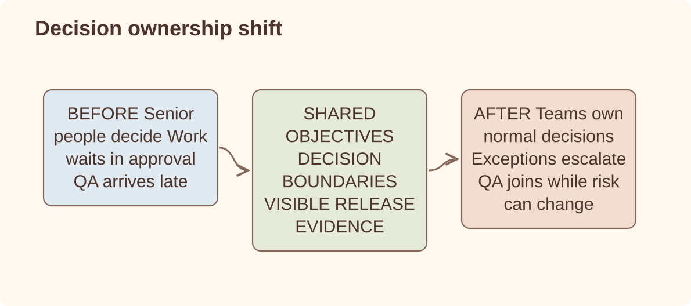

Leadership case study
Scaling an Engineering Organization
What I changed when a small engineering group became several teams and too many decisions still depended on the same few people.
Org design / engineering management / QA leadership / career expectations / feedback loops / delivery quality
Problem
A small engineering team can run on proximity. People know who to ask, senior engineers fill the gaps and the leader can stay close enough to unblock most decisions. At that size, the lack of structure is often invisible.
At larger scale the same habits become expensive. Decisions return to the same people. QA becomes a late-stage gate instead of an ownership function. Managers inherit work without a clear operating model. Teams report movement, but it becomes harder to see whether capability is actually improving.
We had outgrown the informal way decisions were made. Adding more people without changing that would only have increased the load on the same senior engineers and managers.
Scope
Principles
Operating model
Before and after: who owns the decision?

Key decisions
| Decision | Why it mattered | Tradeoff |
|---|---|---|
| Create clearer ownership areas | Reduced ambiguity about who decides, who supports and who is accountable for follow-through. | Some boundaries had to be explicit before they felt natural. |
| Build management capacity | Moved coaching, prioritization and team health closer to the work instead of routing everything through one leader. | Managers need context and trust; otherwise they become status collectors. |
| Create a part-time leadership rung when span of control actually broke | With 18+ engineers on two managers, senior engineers were already leading informally. An associate-manager role (majority IC, 2–3 reports) named the work that was already happening instead of forcing an IC-or-manager leap. | A new rung only works if it formalizes real behavior; launch comms said openly it may not fit every team. |
| Separate QA leadership from late validation | Made quality a system concern: release risk, prevention, regression loops and evidence. | QA needs enough authority to challenge release confidence, not only execute checks. |
| Use career expectations carefully | Gave engineers and managers a clearer language for growth, impact and seniority. | Career ladders can become bureaucracy if they are not tied to real behavior. |
| Treat delivery frameworks as tools, not strategy | Shape Up helped by separating the problem from the implementation and giving small teams more ownership. | It only works when leaders still define what matters, kill weak bets and trust the team to choose the how. |
| Review outcomes, not only movement | Kept attention on reliability, delivery quality and product impact rather than activity. | Outcome signals are slower and sometimes uncomfortable. |
Interesting problems
- When do you add process? When a failure repeats and the root cause is coordination, not when ownership or trust is unclear.
- When does a framework help? When it protects thinking, ownership and focus. When it becomes the scoreboard, it is just another form of control.
- How do you delegate without creating drift? Give people context, decision rights and feedback loops. Delegation without context creates drift.
- How do you keep strong ICs engaged as the org grows? Make seniority about judgment and impact, not only being the person who knows the most code.
- How do you avoid managers becoming routers? Give them real ownership of priorities, people decisions and quality of execution.
- How do you know leadership work is working? Fewer repeated escalations, clearer decisions, healthier release confidence and teams that can operate without one person as the bottleneck.
Results
- Clearer ownership across client engineering, Creator Tools, SDK, QA and release delivery.
- More leadership capacity through managers, QA leadership and senior/staff IC ownership.
- Better release discipline, with weekly production releases and quality signals tied to release confidence.
- More explicit career and performance conversations, with less reliance on implicit expectations.
- Reduced dependency on one person being present in every important technical or delivery decision.
Lessons learned
- Growth exposed decisions we had previously made through proximity and habit.
- We got better results when we named the recurring failure before adding a process.
- A delivery framework helped organize work, but it could not replace trust or clear priorities.
- Managers needed real authority, not a role limited to collecting status.
- I knew the changes were working when familiar decisions stopped returning to the same people.